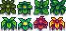

Hierbajos
| Hierbajos | |
|  | |
| ... | |
| Información | |
| Ubicación | La Granja • Pueblo Pelícano • Bosque Tizón • Las minas • Ferrocarril • Madriguera de bichos mutantes |
| Estación | |
| Energía | Incomible |
| Precio de venta | No puede venderse |
Los Hierbajos son encontrados en el suelo de la granja, Pueblo Pelícano, y en las minas. Los hierbajos dejan caer una fibra vegetal cuando son cortados con una guadaña, hacha, o pico. En las minas, los hierbajos también dejan caer fibra si las cortas con una espada.
Spawn y propagación
Los Hierbajos no se generan en el suelo durante el invierno , pero sí en las demás estaciones, apareciendo aleatoriamente en La granja y en Las minas. Su spawn es más común en el cambio de estación, pero seguirá ocurriendo más adelante en la misma estación. También se reproducen en áreas específicas de Pueblo Pelícano y Bosque Tizón durante los primeros días del juego, pero no después. Los Hierbajos no se generan en baldosas que ya estén ocupadas por edificios, equipos, vallas o puertas cerradas.
Si los Hierbajos no se eliminan, pueden multiplicarse y extenderse. Por ejemplo, pueden extenderse a una baldosa ocupada por un piso o camino, lo que destruirá el piso o camino de dicha baldosa.
Cualquier Hierbajo sobre el suelo desaparece en invierno.
Hierbajos Especiales
Los hierbajos mostrados más abajo, los cuales sólo pueden ser encontrados en el Mapa de Granja Forestal y Granja de cuatro esquinas, siempre dejarán caer 1 Semillas Variadas al ser cortados.
Durante el evento de Lluvia verde, aparecen hierbajos especiales y tienen un 10% de dar Musgo cuando se cortan. El evento hace aparecer hierbajos grandes que sueltan 2-3 Musgo y 2-3 Fibra vegetal cuandonse destruyen. Los hierbajos grandes tienen una probabilidad del 5% de dar una semilla musgosa.

Variantes de Lluvia verde

Variante grande 2
Curiosidades
Hay una misión no implementada en el código del juego que consiste en destruir todos los hierbajos en Pueblo Pelícano.
Historial
- 1.4: Se añadió el Sombrero viviente al grupo de drop. Se eliminó un error que causaba que un objeto de hierbajos apareciera cuando se rompía una semilla de Árbol seta. Los hierbajos (y otros escombros) ahora aparecen en el Bosque Tizón y Pueblo Pelícano cada día 1 de primavera.
- 1.6: Durante el evento Lluvia verde, ahora se puede soltar Musgo de algunos hierbajos. Durante el verano, se pueden dejar caer Semillas de flores variadas. El Diario del Mapache aumenta la probabilidad de obtener semillas mixtas y semillas de flores en un 4 %. Ahora existe la posibilidad de que las malas hierbas se conviertan en malas hierbas grandes.